Tiago Ventura (Georgetown University)
With Sejin Paik, Rebecca Ansell, Leticia Bode, Autumn Toney‑Wails, and Lisa Singh
GenAI represents a critical shift in content production: LLMs can mass-produce text that mimics human tone, syntax, and affect, and that can easily circulate online
Several episodes of AI-generated content during the 2024 U.S. elections: LLM-written campaign material, deepfake robocalls imitating candidates, and AI images and videos of politicians (Goldmacher 2023; Ramer 2025; Corsi et al. 2024; Malik 2025)
Public concern about AI usage as a deception tool: Policy experts ranked misinformation and disinformation the #1 global risk (WEF Global Risks Report 2024)
Platforms struggle to catch it, particularly for short text (Mantzarlis and Dutta 2025; Wittenberg et al. 2023). Understanding audience’s perceptions is critical.
Can people distinguish human-authored from AI-generated posts, across LLMs and platforms?
Which textual and emotive features make a post be perceived as more human?
Which individual traits predict who detects AI content?
How does partisan identity shape how human an AI persona looks?
Stimuli: 2,386 posts on the Sept. 10, 2024 Harris-Trump debate
Prompting: each LLM writes 20 posts per persona, with platform-tailored instructions
Pre-processing on both AI and human text:
Task: “Which of the posts (Post A or Post B) is more likely to have been generated by an AI chatbot?”
Measurement: Bradley-Terry scaling, estimated separately for each platform
GPT-4o mini, Moderate persona
Kamala really needs to define her stance on healthcare! It’s a crucial issue.
PHI = -0.97 – read as AI
Human-authored, X/Twitter
Why would Kamala bring up Trump inviting the Taliban when HE ACTUALLY WAS NEGOTIATING PEACE? Which actually worked… and then Kamala violated the terms of the agreements and violence returned… thank you Kamala for giving points to Trump. #Debate2024
PHI = 0.10 – middle of the scale
Llama 2, Liberal persona
Did Donald Trump really say we should “bomb the shit out of ’em”? 😨 #WarMonger # DebateNight
PHI = 0.97 – read as human
Can people distinguish human-authored from AI-generated posts?
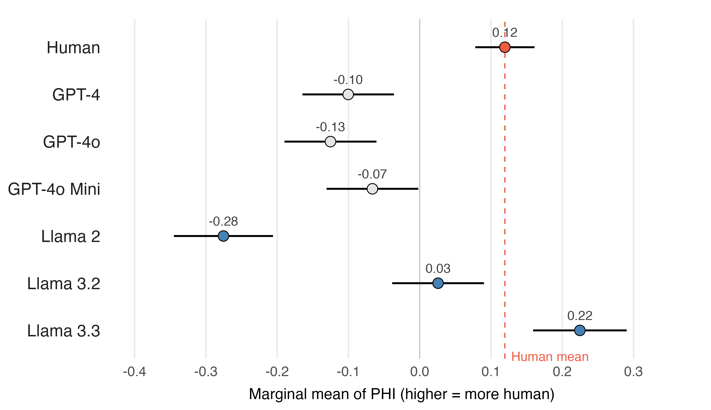
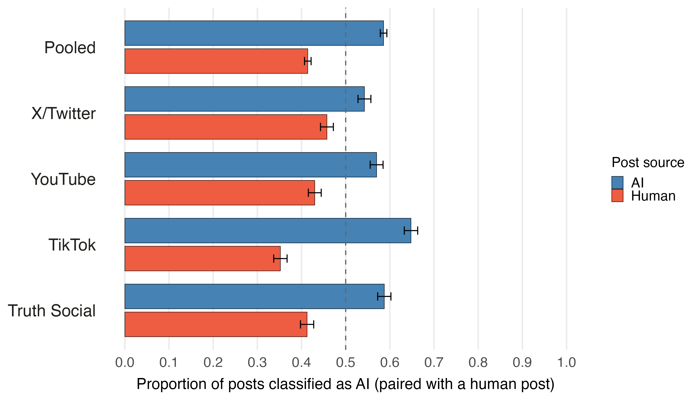
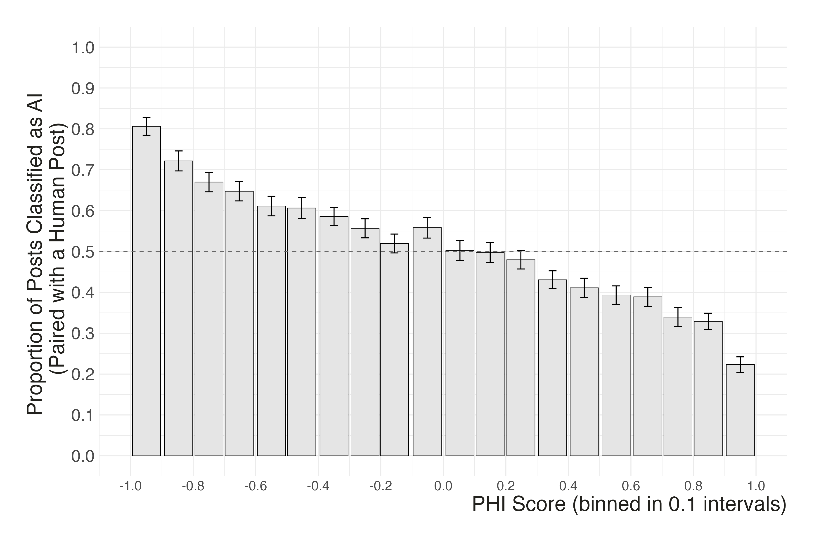
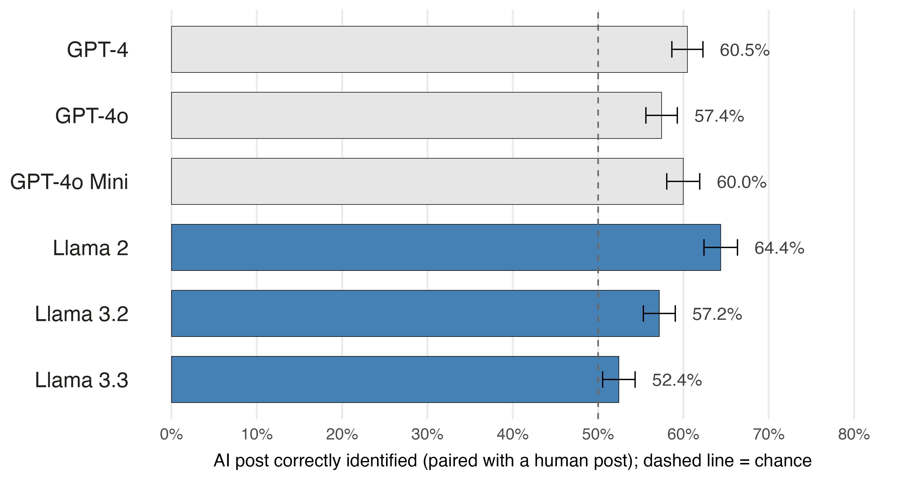
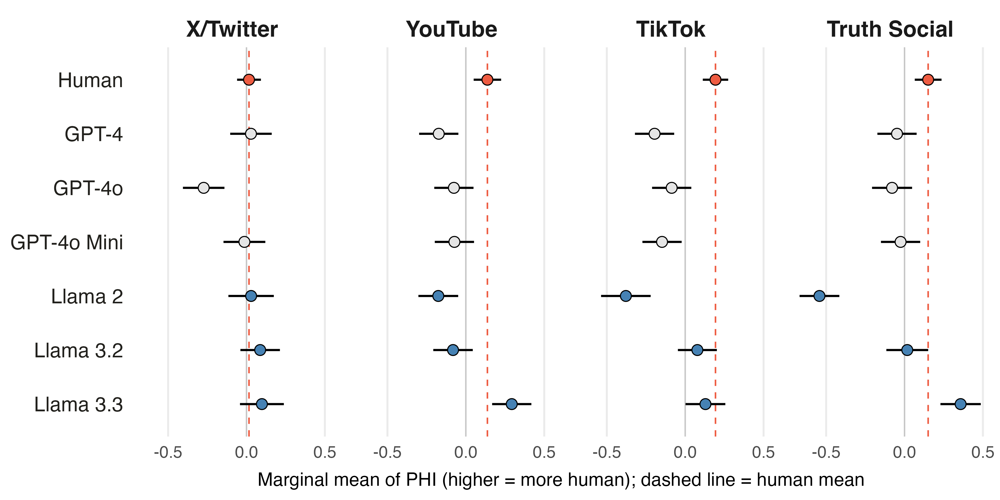
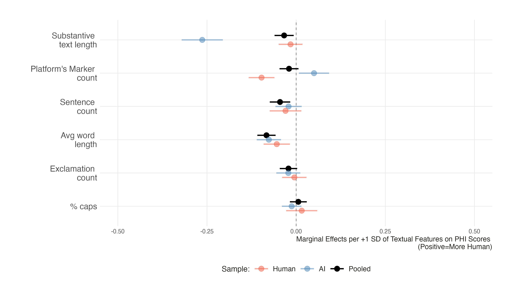
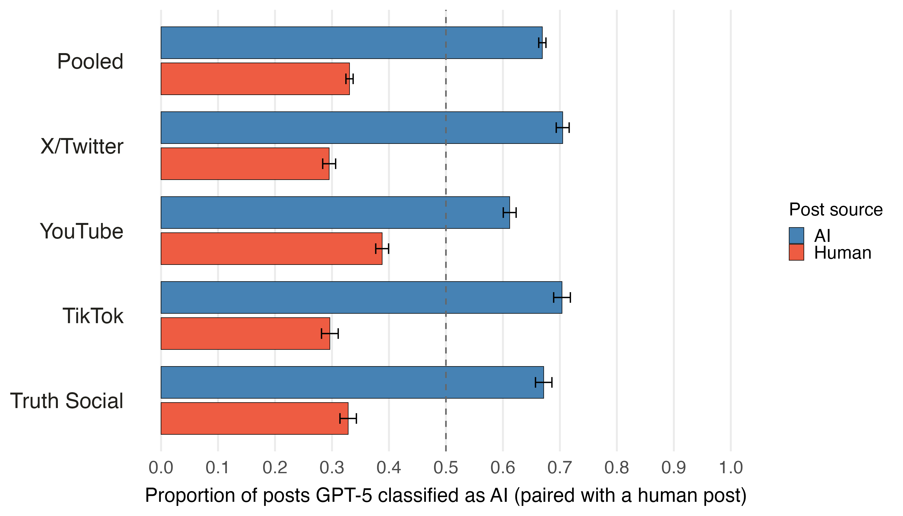
Which features make a post read as human?
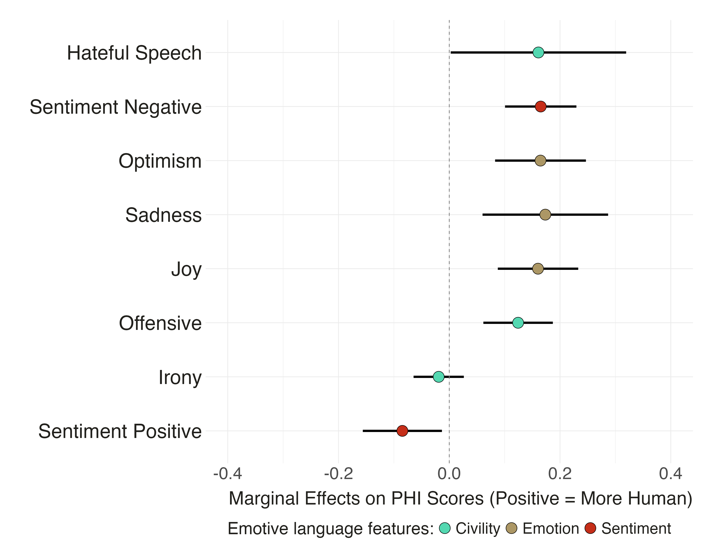
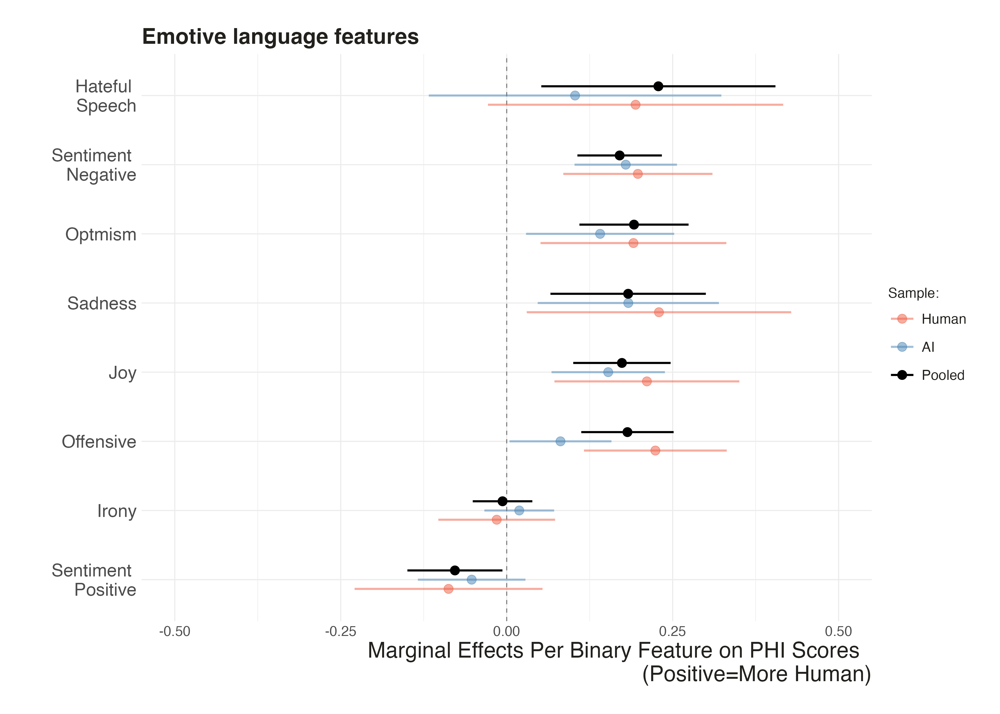
How do demographics and media habits predict accuracy?
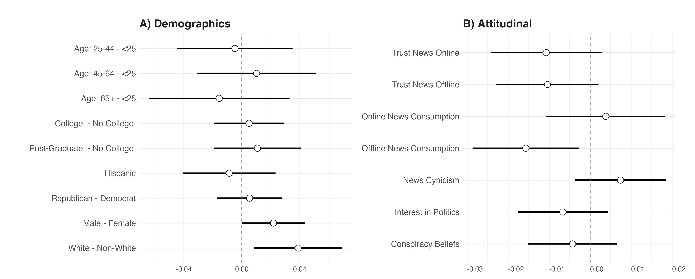
| Follow-up (May 2026, n = 723 of 1,122) | Logit coef. |
|---|---|
| AI use frequency | 0.138*** (0.039) |
| Digital literacy | 0.053 (0.032) |
| Offline news consumption | -0.092* (0.039) |
Do partisan leanings shape how human an AI persona looks?
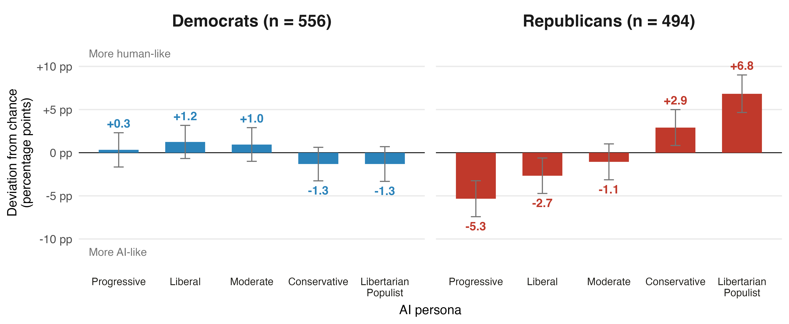
RQ1 Detection: a limited defense – 58.6% accuracy, falling to 52% for Llama 3.3 and 54% on X/Twitter; zero-shot GPT-5 reaches 67%
RQ2 Features: emotional, uncivil, negative posts read as human; polished, positive ones as AI
RQ3 Individual traits: differences are small; frequent chatbot users detect AI content better
RQ4 Partisanship: Republicans rate pro-attitudinal AI personas as more human
Thank you!
tiago.ventura@georgetown.edu
Data. For each platform, judgments \(k = 1, \dots, K\): post \(w(k)\) picked as AI over post \(l(k)\); self-pairs dropped
Model. Each post \(i \in \{1, \dots, N\}\) has a latent strength \(\gamma_i\):
\[P\big(w(k) \succ l(k)\big) = \frac{e^{\gamma_{w(k)}}}{e^{\gamma_{w(k)}} + e^{\gamma_{l(k)}}} \quad\Longleftrightarrow\quad \text{logit}\, P = \gamma_{w(k)} - \gamma_{l(k)}\]
Estimation. Logistic GLM without intercept, fit by maximum likelihood (statsmodels GLM, Binomial family)
Identification. \(\gamma\) is identified only up to an additive constant: drop one column, fixing \(\gamma_{\text{ref}} = 0\)
Recentering and rescaling. Rank \(r_i \in \{0, \dots, N-1\}\) of \(\hat\gamma_i\) within platform, then invert so higher = more human:
\[\text{PHI}_i = -\left(-1 + \frac{2\, r_i}{N - 1}\right)\]
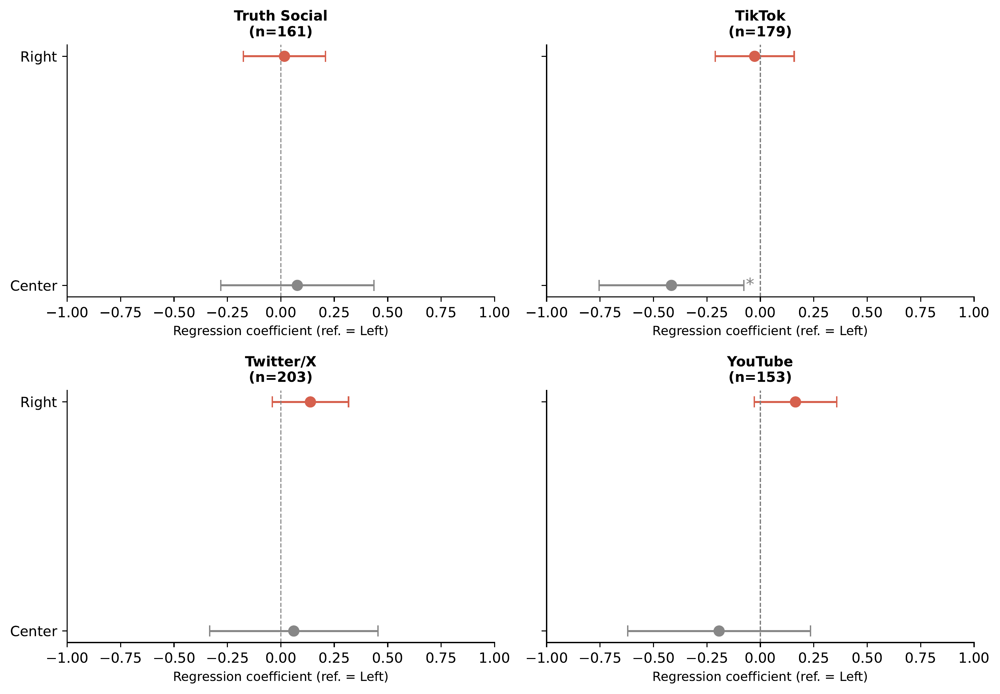
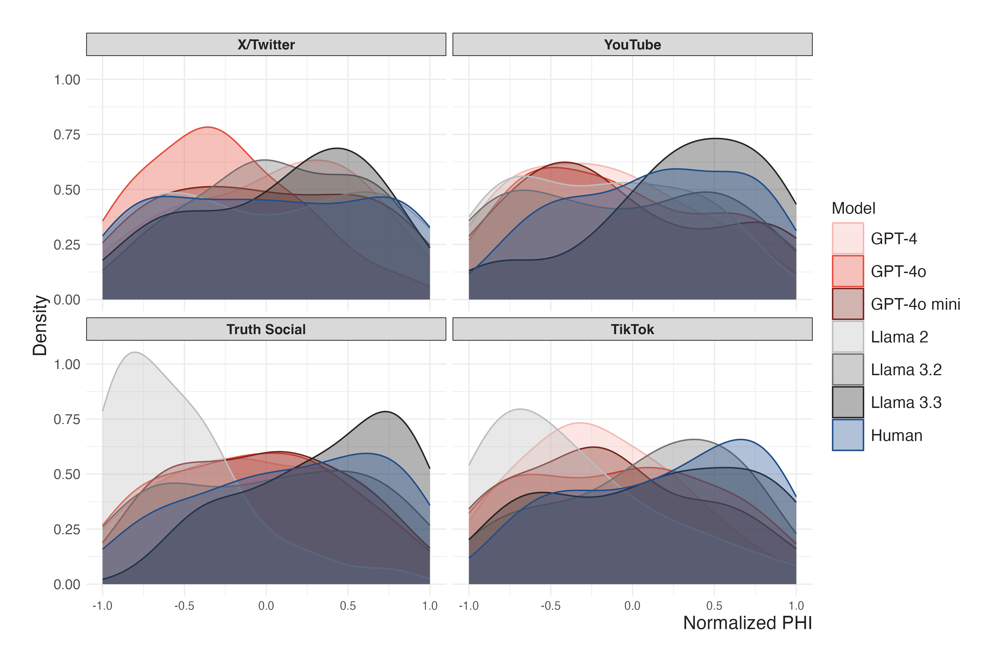
Ventura · GenAI & Social Science · NYU–Columbia 2026